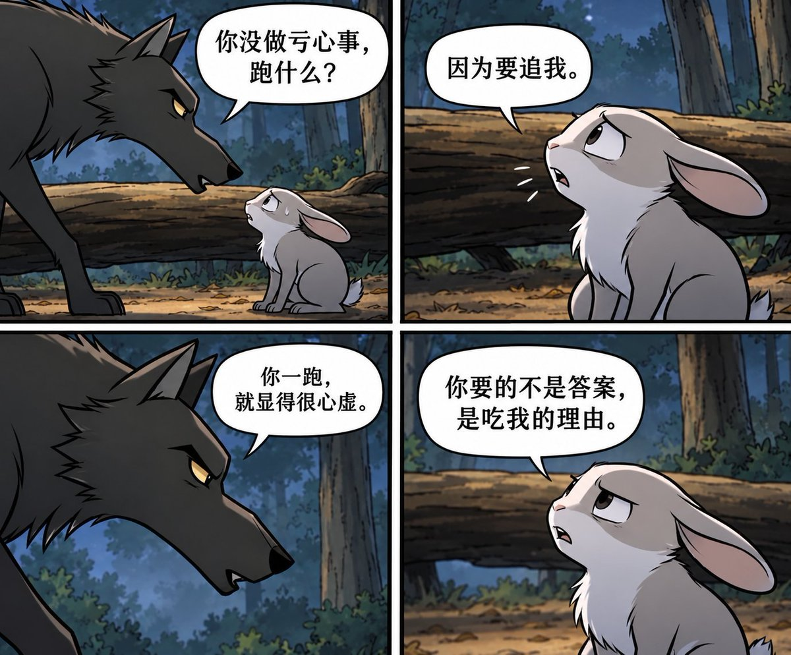
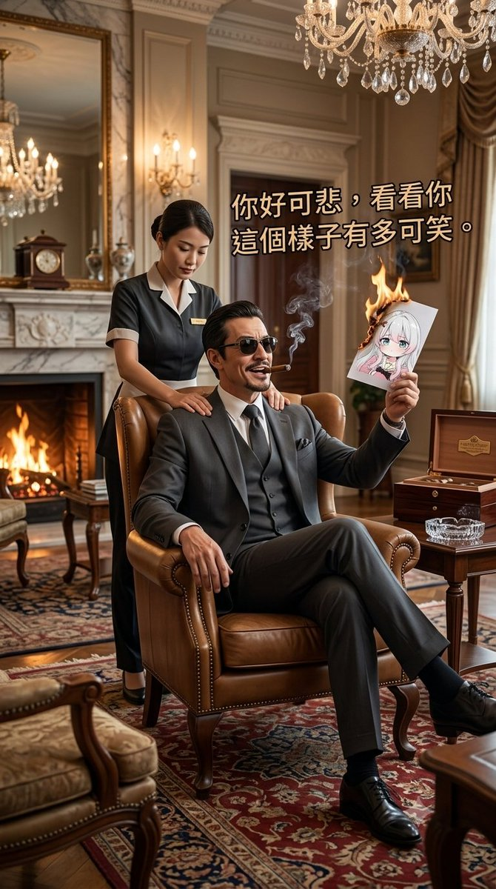

小橘春定（求愛性孤独）
@tatibana_sada
虽然我不知道你们在干啥，但是「不要妄圖用幼稚的梗圖來跟我們的逆統戰對抗」真的给我抠出三室一厅了。感觉像那种初中小屁孩在网上瞎骂然后说我背后的靠山可是很大的，是个几百人的群的群主那样尬。


大日本帝國台灣總督府
@MasaoYamato001
鬼仔藤發的搞笑漫畫假扮受害者試圖醜化我們的逆統戰
🤣😂😆
沒關係，統戰漫畫不配上逆統戰海報，這怎麼可以呢鬼仔？
@fake_fuji
不要妄圖用幼稚的梗圖來跟我們的逆統戰對抗，奶茶大小姐給我的這幅畫比你這張卡通畫準確多了😆😂🤣
只要你敢發一次統戰文，我們就逆統戰一次，直到你無法說話為止🤣😂😆 https://t.co/n17U8HdwUy